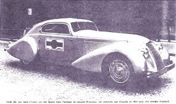
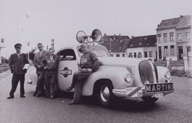
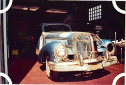

Original design

In 1932 Count Rossi, head of Martini Rossi corporation, ordered a new publicity car to promote his company. He ordered the the chassis of an Isotta Franchini model, but also wanted the car to have a defined look. So he sent the car to the Viotti company where the famous desginer count Revelli and his team designed the unique coachwork.
Once completed, the car was used to promote the martini brand at several events, like cycling races. In 1939 the car was sent to Belgium to promote the new Belgian Branch of the company.
Updating a classic

After several decades of service, the car had become mechanically outdated. Therefore the company ordered to modernise the automobile in the 1950s. The car was refitted by the Belgian Etcher Vermeulen in Schaarbeek.
Due to this modernization, a lot of things were adapted. Not only were new breaks installed, but the original chassis was also replaced by a Lincoln V12. Even the viotti designed coachwork was reworked and refitted with new headlights, mudguards and bumpers.
Out of commision

By 1968 the car was no longer in use and was send to a wrecking yard. But instead of destroying it, the yard sold the car. Thereafter the car would regulary change owner and would through the years be used as a decorative element by a discotheque, a restaurant and several car dealers.
Eventually the car would end up with an old timer dealer in Torhout. He made drastic changes to the old automobile like removing the interior, dorsal fin and front grate. Due to failing health, the owner stopped his reworking and the car remained in unrepair until we bought the its wreckage.